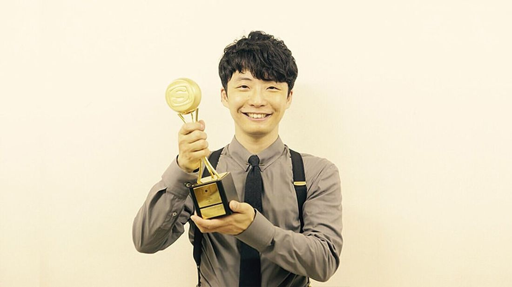
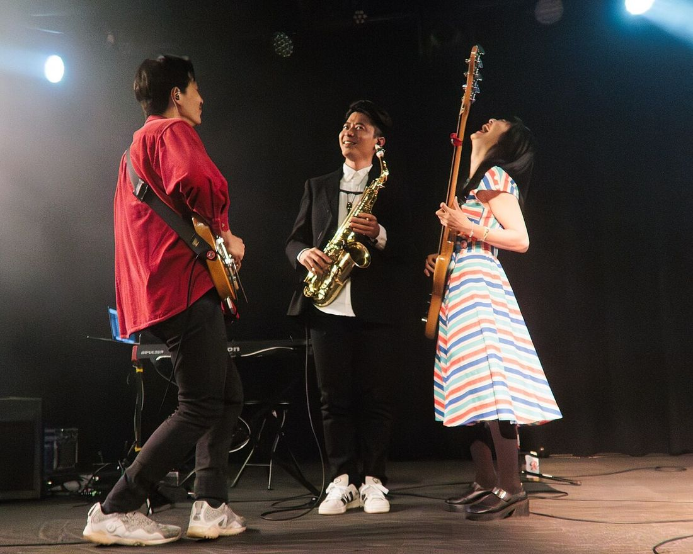

台北老店．公館溫羅汀
海邊的卡夫卡
公館巷子裡，曾經有一家咖啡館，借了村上春樹的書名。

它叫「海邊的卡夫卡」。白天賣咖啡，晚上變成不插電的小舞台。二〇二三年初，它因為都市更新熄燈，經營了 17 年。
二〇〇五年，接棒開張
主理人是阿凱，樂團 1976 的主唱。他說自己是在接公館老咖啡館「挪威森林」的棒，店裡還沿用了那裡的老桌椅。
一週一兩晚的不插電
二〇〇七年的報導寫，這裡每週至少有一到兩晚不插電演出。同年出了合輯《卡夫卡不插電》：8 組樂團、17 首歌。
從這裡走出去的名字
二〇一一年，星野源第一次海外巡演選在這裡。929、HUSH、大象體操，也都是從這個小場地起步。
專業點：磨豆粗細
・濃縮：極細
・手沖：大約中等（看濾紙調整）
・法式濾壓壺：粗
粉越細萃取越快，熱水接觸的時間就要越短。在家咖啡卡卡的，先調磨豆機。
老照片與街景


店家資訊
- 店家
- 海邊的卡夫卡（已歇業）
- 地點
- 原址 台北市中正區羅斯福路三段244巷2號
- 現況
- 已歇業，可看原址
- 營業時間
- 常有變動，出發前請再確認
- IG 影片
- 12/22 上片
你在海邊的卡夫卡聽過誰的第一場演出？留言說說你的卡夫卡回憶。
到 IG 留言告訴我們
到 IG 留言告訴我們